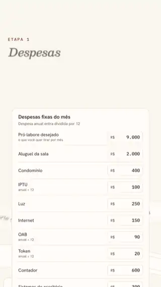
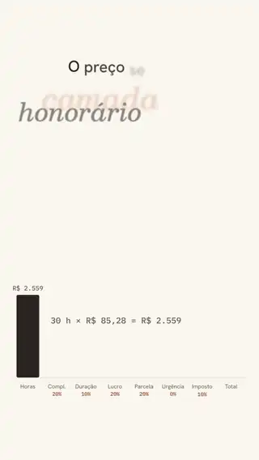
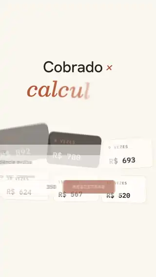
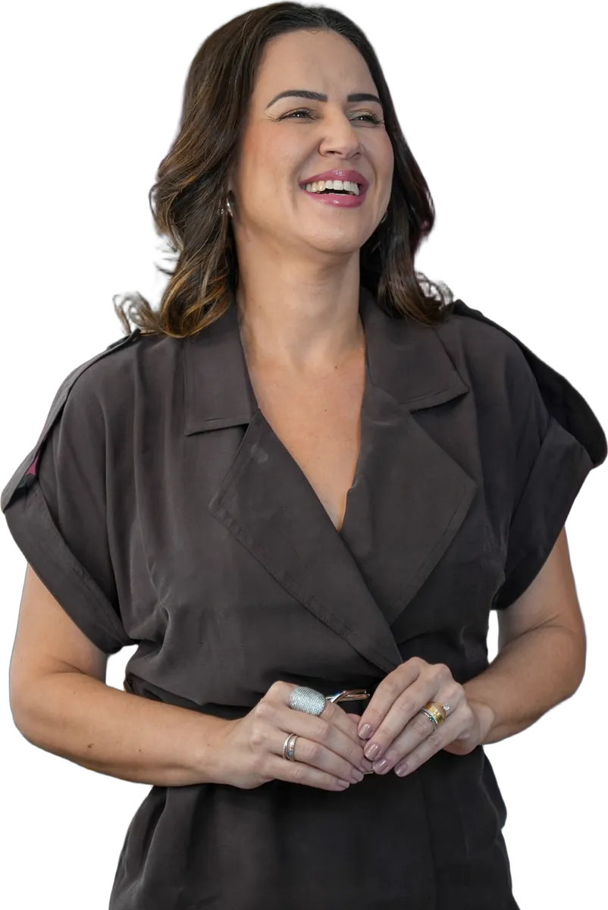
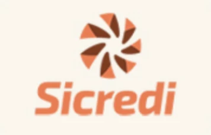
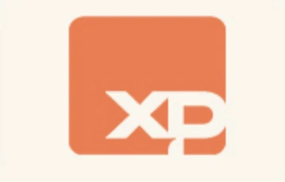
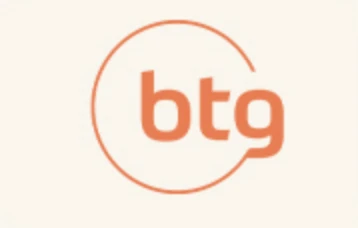
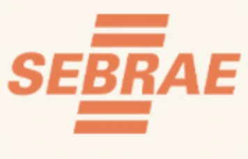

Workshop Mapa de Honorários · 7 de novembro
Um workshop prático para advogados que trabalham muito, mas ainda não sabem se seus honorários realmente dão lucro. Em um sábado você sai com o preço de um serviço do seu escritório calculado do zero: o que ele custa, o que você precisa cobrar e até onde dá pra negociar.
Quero calcular o preço dos meus serviçosR$ 27 até 8 de outubro. No dia 9 de outubro passa para R$ 37.
Vagas limitadas: é ao vivo, e a Soane tira dúvida de cada participante.
Seis etapas que partem do que o seu escritório gasta e chegam no preço de um serviço. No workshop você faz cada uma com os seus números, e a Soane acompanha e corrige o caminho.
Tudo o que o escritório gasta por mês entra no levantamento, com cliente novo ou sem.
Desse levantamento sai quanto custa uma hora do escritório. A sua hora, como sócio, é calculada à parte.
Você escolhe um serviço e estima as horas dele, do primeiro contato à entrega, com o número realista no lugar do otimista.
Escolher a margem de lucro é a parte fácil. A Soane mostra como aplicar essa margem pra que ela apareça inteira no fim do mês.
Com as quatro etapas prontas, o preço do serviço sai de uma conta, e você consegue explicar de onde veio cada parte dele.
Antes de sentar com o cliente você já sabe qual é o menor valor que ainda paga a estrutura, e o desconto deixa de ser decidido na hora, sob pressão.
Com a inscrição, você usa por 30 dias o painel que faz a conta do workshop com os números do seu escritório. É só abrir, trocar os valores e precificar o próximo serviço.

Você lança as despesas do mês e ele mostra quanto cada hora de trabalho precisa render pra pagar o escritório.

Horas, complexidade, lucro e imposto entram um de cada vez, e dá pra ver quanto cada um pesa no valor final.

Registre quanto cobrou em cada serviço e ele aponta em quais você recebeu menos do que deveria.
Busca fórmula pronta pra subir preço sem melhorar entrega;
Não topa olhar para os próprios números durante o workshop;
Acha que só assistir resolve, sem aplicar depois.
Atua sozinho ou tem equipe pequena, até 5 pessoas;
Já atende empresários, mas é visto como prestador pontual, não estratégico;
Tem formação técnica sólida, mas nunca teve formação em gestão ou precificação;
Fatura, mas não enxerga com clareza o lucro do escritório;
Quer decidir honorário com números, não no achismo.
Workshop ao vivo, com 8 horas de duração total — 7 de novembro, sábado, online, a partir das 9h, com execução guiada do Mapa TEJ a partir dos números do seu escritório.
30 dias de acesso antecipado ao Painel de Honorários — pra refazer essa conta nos outros serviços do escritório.
Checklist de serviços deficitários — pra identificar rápido quais serviços hoje dão prejuízo.
Garantia de 15 dias — incondicional. Se não fizer sentido pra você, devolvemos o valor.
Você garante acesso a tudo por:
O preço sobe porque a data se aproxima, não porque a gente quer te apressar: quanto antes você entra, menos paga pelo mesmo conteúdo. E como o workshop é ao vivo e a Soane tira dúvida de cada participante, o número de vagas é limitado — quando fecha, fecha.
Fazer minha inscrição por R$ 27
São mais de 20 anos de advocacia e 15 de vivência empreendedora. Em 2017, Soane fundou o S. Figliuolo Advocacia de Negócios e, desde então, já orientou mais de 5 mil empresas e empresários em decisões societárias, patrimoniais e estratégicas.
No início, ela cobrava pelo trabalho que dava, não pelo valor que entregava, e demorou a perceber que excelência técnica sozinha não sustenta um escritório. A virada veio quando passou a tratar o próprio escritório como empresa: custo mapeado, hora precificada, margem definida. O Mapa TEJ de Precificação nasceu daí.




A falta de tempo costuma ser consequência do mesmo modelo que esse workshop ajuda a mudar. É um sábado, com aplicação ao vivo: você sai com o cálculo pronto, não com lição de casa pra fazer depois.
Essa dúvida geralmente vem de quem acha que precisa faturar mais primeiro, pra só depois organizar a precificação. Na prática é o oposto: sem esse número, fica difícil saber se faturar mais está sobrando ou só ocupando mais a agenda.
Aqui você não sai só com conteúdo, sai com pelo menos um serviço do seu próprio escritório já recalculado, ao vivo, durante o workshop.
O Mapa TEJ parte do custo do escritório e da sua hora, então funciona pra qualquer especialidade, porque o problema (precificar no achismo) não muda com a área de atuação.
Quanto antes a precificação fica organizada, menor o risco de crescer desorganizado, e mais fácil corrigir agora do que depois de já ter uma equipe maior pra reajustar.
Vale pensar no workshop menos como curso e mais como a ferramenta que ajuda a decidir, com clareza, quanto cobrar de cada cliente, inclusive do próximo.
Vai, e é melhor você saber antes. Precificação é 1 dos 10 pilares do método TEJ, e no fim do dia a Soane apresenta a mentoria pra quem quiser seguir nos outros nove. Isso ocupa alguns minutos no fim de oito horas de trabalho. Se você entrar, calcular o preço dos seus serviços e não quiser mais nada, o workshop se encerra ali e está tudo certo.
No sábado, 7 de novembro, a partir das 9h, você passa o dia em cima dos seus próprios números e sai com a resposta calculada, não chutada.
Fazer minha inscrição por R$ 27